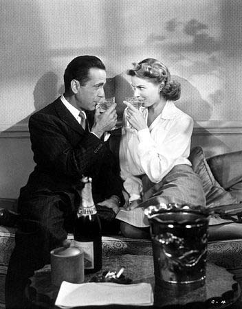
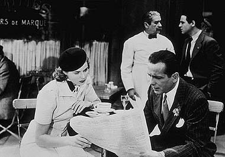
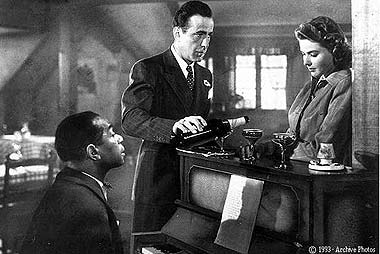
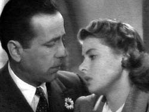

|

Texto de
Susana
Lopes de Alexandria

Ttulo
foi tirado de "Casablanca" (3)

|
 Rick e Ilsa haviam tido um romance alguns anos antes, em Paris. Apesar de saberem pouco um sobre o outro, estavam apaixonados.  Mas os dias de romance em Paris estavam contados: a chegada dos alemes capital da Frana era iminente e Rick teria de deixar o pas, pois estava na lista negra da Gestapo e seria preso pelos alemes.
 Finalmente, os tanques alemes chegam a Paris. Rick e Ilsa decidem partir juntos e se despedem da cidade num bar chamado "La Belle Aurore", onde Sam toca As Time Goes By ao piano (clique aqui para ouvir a msica). Os trs bebem champagne, brincando que no deixariam uma gota sequer para os alemes.  Ilsa diz que precisa voltar ao hotel para arrumar a bagagem. Eles ento combinam de se encontrar na estao de trem, s 4h45. O trem partir s 5h. Ilsa est visivelmente triste, mas diz a Rick que, acontea o que acontecer, ela sempre o amar. |